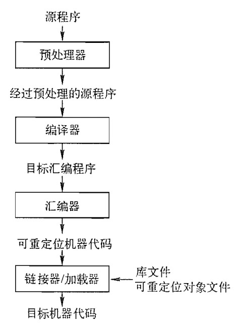
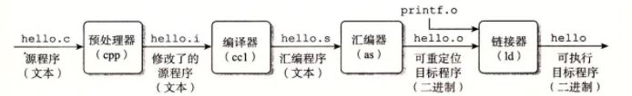
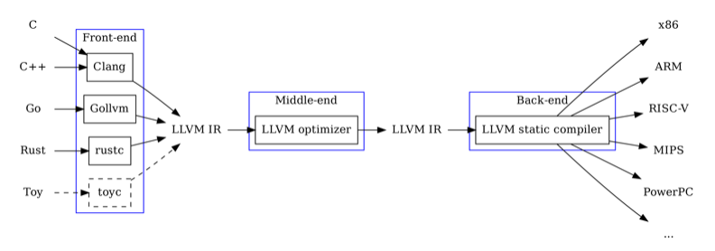

了解编译器及 LLVM IR 编程¶
备注
该部分与 C++ 版本的实验文档基本一致，可能未针对 Rust 进行特别修改，如果发现问题请及时联系助教。
实验描述¶
备注
如果本文档实验描述、要求与雨课堂的实验要求不一致，请以雨课堂的要求为准。
如果你发现本文档有任何问题，请及时联系助教。
注意
请注意，预备工作这次实验需要完成了解编译器、熟悉 LLVM IR 以及编写汇编程序三个部分。本节文档包括了解编译器和熟悉 LLVM IR 两个部分，关于汇编编程的有关内容，请参考 汇编编程 。
在开始实验前首先确定上机作业两人分组，报告助教备案，之后不应改变。
以 GCC（或 LLVM/Clang 等你常用的、熟悉的编译工具）为研究对象，更深入地探究语言处理系统的完整工作过程：预处理器做了什么？编译器做了什么（包括更细致的编译器各阶段的功能） ？汇编器做了什么？链接器做了什么？
熟悉 LLVM IR 中间语言，对你要实现的 SysY 编译器各语言特性，编写 LLVM IR 程序小例子，用 LLVM/Clang 编译成目标程序、执行验证。
设计几个 SysY 程序，编写等价的 ARM/RISC-V 汇编程序，用汇编器生成可执行程序，调试通过、能正常运行得到正确结果。关于汇编编程的有关内容，请参考下一节 汇编编程 。
方法¶
以一个简单的 C（C++）源程序为例（你也可以用 Rust，但是请先基于 C/C++ 进行探索），调整编译器的程序选项获得 各阶段的输出 ，
研究它们与源程序的关系，以此撰写调研报告。二进制文件或许需要利用某些系统工具理解，如 objdump 、 nm。进一步地，
可以调整你认为关键的 编译参数 （如优化参数、链接选项参数），比较目标程序的大小、运行性能等。你的源程序可以包含尽可能丰富的语言特性
（如函数、全局变量、常量、各类宏、头文件...），以更全面探索每一个阶段编译器进行的工作。
备注
对不同的源程序做多个但只是重复相同工作不会给更高分数。
实验要求¶
撰写调研报告（符合科技论文写作规范，包含完整结构：题目、摘要、关键字、引言、你的工作和结果的具体介绍、结论、参考文献，文字、图、表符合格式规范，建议使用 latex 撰写）。
备注
可基于 此模板 ，该模板所在网站是一个很流行的 latex 文档协同编辑网站，copy 此 project 即可成为自己的项目，在其上编辑即可，更多 latex 参考资料见 LaTeX 入门 ， LaTeX 命令与符号汇总 和 LaTeX 数学公式等符号书写 。
分工 小题一两人独立完成，小题二、三两人各负责一个小题。
报告撰写 整体框架两人共同构建；小题1根据各自完成情况独立撰写；小题2、3根据分工分别撰写自己所负责的小题；其他部分共同撰写；在报告开始描述清楚两人分工。
报告独立提交 报告内容 = 共同撰写部分 + 独立撰写的小题 1 实验结果 + 分别撰写的小题 2 和小题 3 实验结果。
期望不要当作“命题作文”，要更多地发挥主观能动性，将其当做实验进行更多探索。 例如：
细微修改程序，观察各阶段输出的变化，从而更清楚地了解编译器的工作；
调整编译器的程序选项，例如加入调试选项、优化选项等，观察输出变化、了解编译器；
尝试更深入的内容，例如令编译器做自动并行化，观察输出变化、了解编译器。
与预习作业 1 中的优化问题相结合等等。
基础样例程序¶
阶乘：
#include "stdio.h"
int main()
{
int i, n, f;
scanf("%d", &n);
i = 2;
f = 1;
while (i <= n)
{
f = f * i;
i = i + 1;
}
printf("%d\n", f);
return 0;
}
斐波那契数列：
#include "stdio.h"
int main()
{
int a, b, i, t, n;
a = 0;
b = 1;
i = 1;
scanf("%d", &n);
printf("%d\n", a);
printf("%d\n", b);
while (i < n)
{
t = b;
b = a + b;
printf("%d\n", b);
a = t;
i = i + 1;
}
return 0;
}
参考流程¶
备注
以下内容仅供参考，更多的细节希望同学们亲自动手体验，详细了解各阶段的作用。
以一个 C 程序为例，整体的流程如图所示：
{kind=link}
简单来说，不同阶段的作用如下：
预处理器 处理源代码中以
#开始的预编译指令，例如展开所有宏定义、插入#include指向的文件等，以获得经过预处理的源程序。编译器 将预处理器处理过的源程序文件翻译成为标准的 汇编语言 以供计算机阅读。
汇编器 将汇编语言指令翻译成 机器语言 指令，并将汇编语言程序打包成可重定位目标程序。
链接器 将可重定位的机器代码和相应的一些目标文件以及库文件链接在一起，形成真正能在机器上运行的目标机器代码。
一个 C 程序 hello.c，经历上述 4 个编译阶段最终生成可执行程序：
下面将详细介绍每个阶段的实验方法（源程序用 main.c 表示）。
预处理器¶
预处理阶段会处理预编译指令，包括绝大多数的 # 开头的指令，如 #include 、 #define 、 #if 等等，对 #include 指令会替换对应的头文件，对 #define 的宏命令会直接替换相应内容，同时会删除注释，添加行号和文件名标识。
对于 gcc，通过添加参数 -E 令 gcc 只进行预处理过程，参数 -o 改变 gcc 输出文件名，因此通过命令得到预处理后文件：
gcc main.c -E -o main.i
观察预处理文件，可以发现文件长度远大于源文件，这就是将代码中的头文件进行了替代导致的结果。另外，实际上预处理过程是 gcc 调用了另一个程序（C Pre-Processor 调用时简写作 cpp）完成的过程，有兴趣的同学可以自行尝试。
编译器¶
编译过程是我们整门课程着重讲述的过程，具体来说分为六步，详细解释可以查看课程的预习 PPT，简单来说分别为：
词法分析：将源程序转换为单词序列。对于 LLVM，你可以通过以下命令获得 token 序列：
clang -E -Xclang -dump-tokens main.c
语法分析：将词法分析生成的词法单元来构建抽象语法树（Abstract Syntax Tree，即 AST）。对于 gcc，你可以通过 -fdump-tree-original-raw flag 获得文本格式的 AST 输出。LLVM 可以通过如下命令获得相应的 AST：
clang -E -Xclang -ast-dump main.c
语义分析：使用语法树和符号表中信息来检查源程序是否与语言定义语义一致，进行类型检查等。
中间代码生成：完成上述步骤后，很多编译器会生成一个明确的低级或类机器语言的中间表示。
你可以通过 -fdump-tree-all-graph 和 -fdump-rtl-all-graph 两个 gcc flag 获得中间代码生成的多阶段的输出。生成的 .dot 文件可以被 graphviz 可视化，VSCode 中直接有相应插件。
你可以看到控制流图（CFG），以及各阶段处理中（比如优化、向 IR 转换）CFG 的变化。你可以额外使用 -Ox 、 -fno-* 等 flag 控制编译行为，使输出文件更可读、了解其优化行为。
LLVM 可以通过下面的命令生成 LLVM IR：
clang -S -emit-llvm main.c
代码优化：进行与机器无关的代码优化步骤改进中间代码，生成更好的目标代码。
在第一周的预习作业中，很多同学对编译器如何进行代码优化感到疑问，在这个步骤中你可以通过 LLVM 现有的优化 pass 进行代码优化探索。
在 LLVM 官网对所有 pass 的分类 [1] 中，共分为三种：Analysis Passes、Transform Passes 和 Utility Passes。Analysis Passes 用于分析或计算某些信息，以便给其他 pass 使用，如计算支配边界、控制流图的数据流分析等；Transform Passes 都会通过某种方式对中间代码形式的程序做某种变化，如死代码删除，常量传播等。
LLVM 可以通过下面的命令生成每个 pass 后生成的 LLVM IR，以观察差别：
llc -print-before-all -print-after-all main.ll > main.log 2>&1
# 因为输出的内容过长，在命令行中无法完整显示，这时必须要对输出进行重定向
# 0、1、2 是三个文件描述符，分别表示标准输入 (stdin)、标准输出 (stdout)、标准错误 (stderr)
# 因此 2>&1 的具体含义就不难理解，你也可以试试去掉重定向描述，看看实际效果
同样，你也可以通过下面的命令指定使用某个 pass 以生成 LLVM IR，以特别观察某个 pass 的差别：
opt -<module name> <test.bc> /dev/null
所有的 module name 对应的命令行参数也可以在 [1] 查到。
LLVM IR 编程¶
备注
现代编译器的编译流程是非常复杂的，虽然很多语言都选择 LLVM 作为代码生成的框架，但是不同的编译器也会添加自己的高层 IR，例如：
高层次的 IR 可以建模更多的语言特性，同时也可以更好地进行优化。但是这些 IR 也会增加编译器的复杂度，就课程实验来说，我们只需要关注 LLVM IR 即可。
LLVM IR 概述¶
LLVM IR（Intermediate Representation）是由代码生成器自顶向下遍历逐步翻译语法树形成的，你可以将任意语言的源代码编译成LLVM IR， 然后由 LLVM 后端对 LLVM IR 进行优化并编译为相应平台的二进制程序。LLVM IR 具有类型化、可扩展性和强表现力的特点。LLVM IR 是相对于 CPU 指令集更为高级、但相对于源程序更为低级的代码中间表示的一种语言。从上述介绍中可以看出LLVM后端支持相当多的平台，我们无须担心操作系统等平台的问题， 而且我们只需将代码编译成 LLVM IR，就可以由优化水平较高的LLVM后端来进行优化。此外，LLVM IR 本身更贴近汇编语言，指令集相对底层，能灵活地进行低级操作。
LLVM IR代码存在三种表示形式：在内存中的表示（BasicBlock、Instruction 等 C++ 实现的类）、二进制代码形式（用于编译器加载）、
可读的汇编语言表示形式。除了上面提到的 clang -S -emit-llvm main.c，你也可以通过 clang -c -emit-llvm main.c -o mian.bc
生成 bitcode 形式的 LLVM IR 文件。
实验案例¶
下面以一个基础样例程序（示例给的阶乘程序）为例对 LLVM IR 特性进行简单介绍。
首先你需要在命令行中输入 clang -emit-llvm -S main.c -o main.ll，打开同目录下的 main.ll
文件，你可以得到以下内容（本指导书已删除无用语句，加入 LLVM IR 相关注释及其与 SysY 语言特性的对应关系）
; 所有的全局变量都以 @ 为前缀，后面的 global 关键字表明了它是一个全局变量
; SysY 语言中注释的规范与 C 语言一致
; 函数定义以 `define` 开头，i32 标明了函数的返回类型，其中 `main`是函数的名字，`@` 是其前缀
; FuncDef ::= FuncType IDENT "(" [FuncFParams] ")" Block; FuncDef 表示函数定义，FuncType 指明了函数的返回类型，FuncParam是函数定义的形参列表
define i32 @main() #0 {
; 以 % 开头的符号表示虚拟寄存器，你可以把它当作一个临时变量（与全局变量相区分），或称之为临时寄存器
%1 = alloca i32, align 4
; 为 %1 分配空间，其大小与一个 i32 类型的大小相同。%1 类型即为 i32*，align 4 可以理解为对齐方式为 4 个字节
%2 = alloca i32, align 4
%3 = alloca i32, align 4
%4 = alloca i32, align 4
; 将 0（i32）存入 %1（i32*）
store i32 0, i32* %1, align 4
; 调用函数 @scanf ，i32 表示函数的返回值类型
%5 = call i32 (i8*, ...) @__isoc99_scanf(i8* getelementptr inbounds ([3 x i8], [3 x i8]* @.str, i64 0, i64 0), i32* %3)
store i32 2, i32* %2, align 4
store i32 1, i32* %4, align 4
; 这里的 br 是无条件分支，label 可以理解为一个代码标签，指代下面那个代码块
br label %6
6: ; preds = %10, %0
%7 = load i32, i32* %2, align 4
%8 = load i32, i32* %3, align 4
; icmp 会根据不同的比较规则（这里是 sle，小于等于）比较两个操作数 %7 和 %8，i32 是操作数类型
%9 = icmp sle i32 %7, %8
; 这里的 br 是有条件分支，它根据i1和两个label的值，用于将控制流传输到当前函数中的不同基本块。
; i1 类型的变量 %cmp 的值如果为真，那么执行 label%10，否则执行 label%16
br i1 %9, label %10, label %16
10: ; preds = %6
%11 = load i32, i32* %4, align 4
%12 = load i32, i32* %2, align 4
%13 = mul nsw i32 %11, %12
store i32 %13, i32* %4, align 4
%14 = load i32, i32* %2, align 4
%15 = add nsw i32 %14, 1
store i32 %15, i32* %2, align 4
br label %6, !llvm.loop !10
16: ; preds = %6
%17 = load i32, i32* %4, align 4
%18 = call i32 (i8*, ...) @printf(i8* getelementptr inbounds ([4 x i8], [4 x i8]* @.str.1, i64 0, i64 0), i32 %17)
ret i32 0
}
;函数声明
declare dso_local i32 @__isoc99_scanf(i8*, ...)
declare dso_local i32 @printf(i8*, ...)
根据上述.ll 文件，我们对 LLVM IR 及 SysY 特性做以下总结：
LLVM IR 的基本单位称为
module（只要是单文件编译就只涉及单module），对应 SysY 中的CompUnit——CompUnit ::= [CompUnit] (Decl | FuncDef) `` ，一个 ``CompUnit中有且仅有一个main函数定义，是程序的入口。一个
module中可以包含多个顶层实体，如function和global variable，CompUnit的顶层变量/常量声明语句（对应Decl），函数定义（对应FuncDef）都不可以重复定义同名标识符（IDENT），即便标识符的类型不同也不允许。一个
function define中至少有一个basicblock。basicblock对应 SysY 中的Block语句块，语句块内声明的变量的生存期在该语句块内。Block表示为Block ::= “{” BlockItem “}”; BlockItem ::= Decl | Stmt;每个
basicblock中有若干instruction，且都以terminator instruction结尾。SysY 中语句表示为Stmt ::= LVal “=” Exp “;” | [Exp] “;” | Block | “if” “(” Exp “)” Stmt [“else” Stmt] | “while” “(” Exp “)” Stmt | “break” “;” | “continue” “;” | “return” [Exp] “;”;
LLVM IR 中注释以
;开头，而 SysY 中与 C 语言一致。LLVM IR 是静态类型的，即每个值的类型在编写时是确定的。
LLVM IR 中全局变量和函数都以
@开头，且会在类型（如i32）之前用global标明，局部变量以%开头，其作用域是单个函数，临时寄存器（上文中的%1等）以升序阿拉伯数字命名。函数定义的语法可以总结为：
define + 返回值 (i32) + 函数名 (@main) + 参数列表 ((i32 %a, i32 %b)) + 函数体 (ret i32 0)，函数声明你可以在main.ll的最后看到，即用declare替换define。SysY 中函数定义表示为FuncDef ::= FuncType IDENT "(" [FuncFParams] ")" Block。终结指令一定位于一个基本块的末尾，如
ret指令会令程序控制流返回到函数调用者，br指令会根据后续标识符的结果进行下一个基本块的跳转，br指令包含无条件br + label和有条件br + 标志符 + truelabel + falselabel两种。i32这个变量类型实际上就指 32 bit 长的 integer，类似的还有void、label、array、pointer等。绝大多数指令的含义就是其字面意思，
load从内存读值，store向内存写值，add相加参数，alloca分配内存并返回地址等。
关于 LLVM IR 可以从 官方文档 进行更多了解。有关 SysY 语言更多内容可以参考 SysY语言定义 和 SysY 运行时库。
小技巧
Compiler Explorer 是一个非常好的在线编译器，你可以在上面输入代码，查看不同编译器的输出，其中也包括 LLVM IR 。例如 这里 就是简单阶乘程序的 LLVM IR 输出。它也支持直接编译到汇编代码，你可以自行查阅相关资料探索。